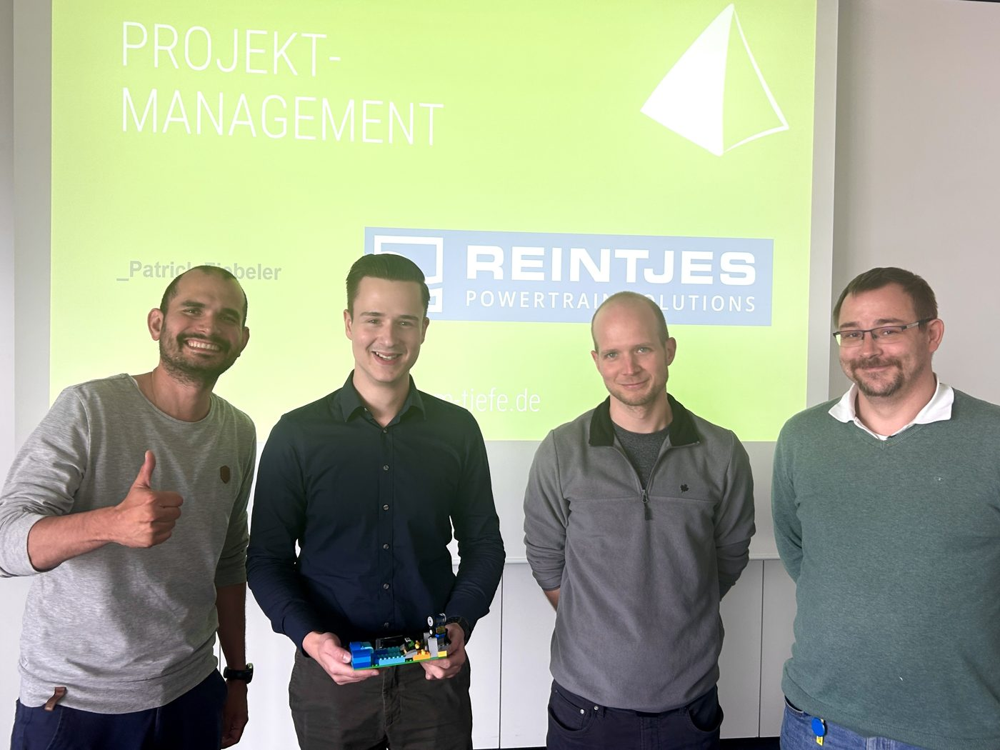
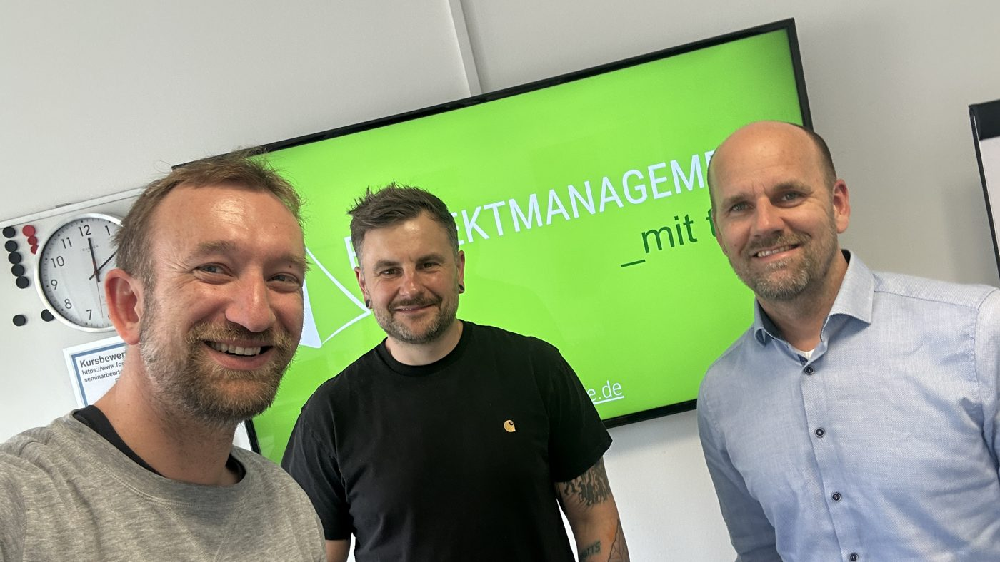
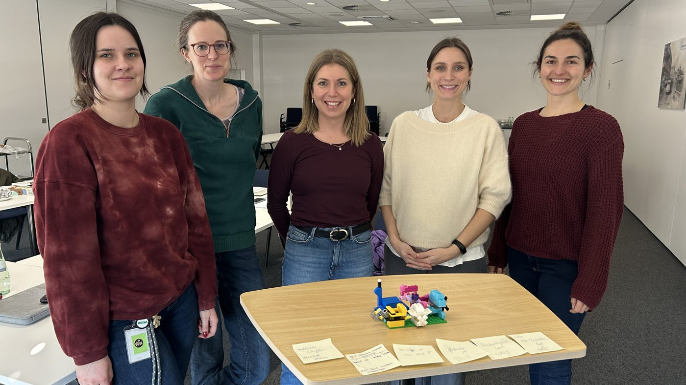
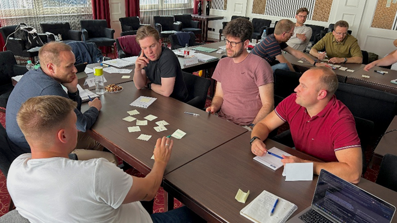
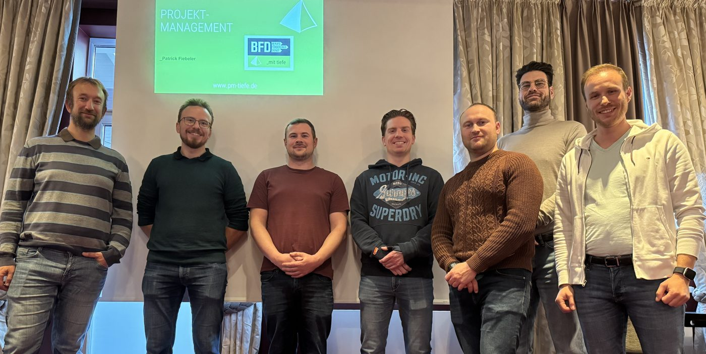
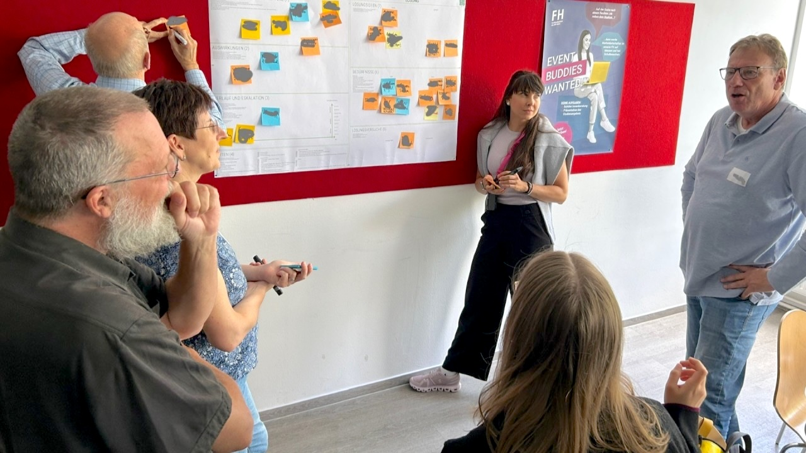
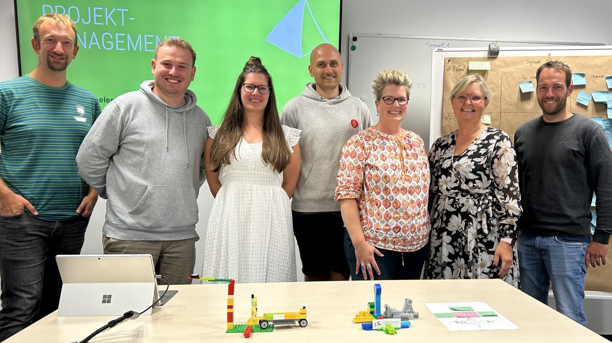
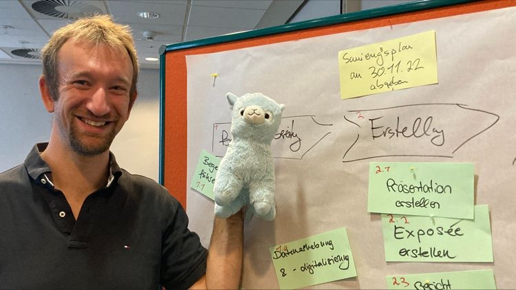

_trainings & workshops
Mit meinen erprobten Trainings in verschiedenen Formaten oder in einem Workshop können wir gemeinsam einen Tauchkurs in Projektmanagement bestreiten.
Wir wenden Methoden und Techniken aktiv für Ihre Projekte an und der Fokus liegt immer auf angemessenen und praxisnahen Anwendungen.
Die meisten Trainings werden durch online-Kurse auf der Lernplattform Udemy von mir begleitet.
Wenn Sie ein individuelles Training zusammenstellen möchten, nutzen Sie meinen Trainingskonfigurator.








_grundlagen/essentials
Startpunkt
Sie haben erste Berührungen mit Projektmanagement im Beruf und/oder in der Theorie und wollen eine gute Grundlage legen.
Das Zertifikat der GPM ist Ihnen erstmal nicht so wichtig.
Ziele
- Erlernen und vertiefen der für ihre Praxis wichtigsten Kompetenzen in Projektmanagement
- Auswahl der Schwerpunkte auf Basis der Struktur der Kompetenzelemente der IPMA/GPM
- mögliche Kompetenzelemente: Strategie, Stakeholder, Ziele, Risiken, Planung, Kosten, Kommunikation, Selbstmanagement, Team, Führung
_basiszertifikat
Startpunkt
Sie haben erste Berührungen mit Projektmanagement im Beruf und/oder in der Theorie und wollen eine gute Grundlage legen.
Diese soll mit der Zertifizierung Basiszertifikat besiegelt werden.
Ziele
- Erlernen und vertiefen der für die Zertifizierung notwendigen Kompetenzen in Projektmanagement
- Anwendung ausgewählter Kompetenzen in der Projektarbeit
- Kompetenzelemente z.B.: Strategie, Governance, Design, Stakeholder, Ziele, Risiken, Projektstruktur, Organisation, Ablauf, Kommunikation, Macht
_upgrade Level D
Startpunkt
Sie haben das Basiszertifikat und wollen den nächsten Schritt gehen.
Ziele
- Höherzertifizierung zu Level D
- Erlernen und vertiefen der für die Zertifizierung notwendigen Kompetenzen in Projektmanagement
- Anwendung ausgewählter Kompetenzen in der Projektarbeit
- Kompetenzelemente z.B.: Führung, Selbstmanagement, pers. Integrität, Team, Konflikte, Beschaffung, Qualität, Veränderung
_executive PM
Startpunkt
Sie führen mehrere Projektleiter, sind Projektauftraggeber /-sponsor, Chief Project Officer oder tragen die Gesamtverantwortung für die wichtigsten Projekte in ihrem Unternehmen.
Wenn Sie ehrlich sind, könnte ihre Kompetenz in Projektmanagement aber eine Auffrischung benötigen.
Ziele
- gemeinsam definiertes Lernziel
- Auswahl an Kompetenzelemente der GPM
- individuelle Schwerpunkte mit Beratungs-/Coachingcharakter
- flexible Anpassung der Trainingszeiten flexible Trainingstermine (auch außerhalb normaler Arbeitszeiten)
- Gesundheitsmanagement und Stressbewältigung
- Trainingselemente mit besonderen Erlebnissen
- Organisation eines Management-Brunch mit ausgewählten Mitarbeitern aus den Projekten zur Verbesserung der Zusammenarbeit
_konfliktmanagement
Startpunkt
Irgendwie sind Sie von dem Projekt geschafft. Es ist sachlich gar nicht so schwierig, aber Konflikte belasten die Zusammenarbeit.
Wo Menschen in Projekten zusammenarbeiten, entstehen zwangsläufig Konflikte. Konfliktmanagement in Projekten professionell zu betreiben, ist daher ein kritischer Faktor für den Erfolg eines jeden Projekts.
Ziele
Konflikte
- frühzeitig erkennen
- angemessen anzuerkennen
- gründlich analysieren
- effektiv verhindern
- erfolgreich lösen.
- sicherer Umgang mit dem Konfliktcanvas von Projektmanagement mit Tiefe
_verhandlungsführung
Startpunkt
Ihr Unternehmen führt gerade Verhandlungen mit Kunden für den Abschluss eines Projektes oder eine intensive Verhandlungsphase steht bevor. Ich kann mit Ihnen die theoretischen Grundlagen von Verhandlungen auffrischen und einen für ihr Unternehmen passenden Verhandlungsprozess aufsetzen. Sie sind dann bestens gewappnet, um einen erfolgreichen und abwickelbaren Abschluss zu erreichen.
Mein Schwerpunkt liegt in der Verhandlung von Großprojekten mit mehreren Verhandlungswochen, verschiedenen teilweise parallelen Streams und einer Vielzahl an Teilnehmer im internationalen Kontext im Ausland beim Kunden. Die theoretischen Grundlagen sind universell anwendbar, auch wenn es sich z.B. um eine eher kleine Verhandlung mit einem Lieferanten in ihrem Projekt handelt.
Wir passen dann den Verhandlungsprozess gemeinsam an ihre Bedürfnisse an.
Ziele
In 50 Tagen zu ihrem Verhandlungsprozess. Zum Verhandlungsprozess gehören u.a.:
- abgestimmte Rollendefinitionen und Eskalationswege
- hilfreiche Templates zur Vor- und Nachbereitung
- Tools zur Verfolgung von Änderungen, Action Items, Critical Items und Dokumentenaustausch
- Schnittstelle zum Risiko- und Chancenmanagement
- eine gute Governance, die alle Stakeholder angemessen einbindet
- klaren Zielen und Erfolgskontrolle, die das Verhandlungsteam ausrichten
- Fortschrittstracking
- Lessons-Learned auch für andere Projekte
_crash Kurs Projekt Uboot
Startpunkt
Sie haben Spaß an Projektmanagement und wollen eine spannende Fallstudie im Team bearbeiten. Sie wollen einen Einstieg in Projektmanagement wagen oder die Essentials auffrischen. Das möglichst nicht trocken, sondern aktiv und fordernd.
Ziele
- schneller, interessanter Einstieg in Projektmanagement
- eigenverantwortliches, moderiertes Selbststudium online
- Teambuilding und gemeinsames Erarbeiten eines Grundverständnisses von PM an einem Tag Live
_risikoworkshop
Startpunkt
So richtig klappt es mit der Risikoliste im Projekt nicht: Da steht zwar viel drin, aber irgendwie wissen Sie nicht, warum Sie die Probleme nochmal doppelt auflisten sollen und wie sie das Projektteam und die Linie beteiligen sollen.
Ziele
Ablauf:
- Sammlung und Bewertung von vorhandenen Materialien und Risikomanagement-Plan/Richtlinie
- Durchführung 2 Tage Live Workshop
Ergebnisse:
- Unterschied zwischen Problemen und Risiken
- Risiken im Projekt identifizieren, analysieren, bewerten, mitigieren und monitoren können
- verbesserte/initiale Risikoliste für ihr Projekt, mit der Sie gerne arbeiten
- ein (verbessertes) Konzept für den Risikomanagement-Prozess für ihr Projekt und Unternehmen
_projektstart/Kick-Off
Startpunkt
Sie wollen ein für Sie wichiges Projekt professionell starten oder einen Phasenübergang als Teamevent gestalten?
Ziele
Ablauf:
- Vorbereitung: Agenda, Location, Umfrage
- Vorbereitung II: Aufbereitung wichtiger Unterlagen, wie Projektplanung, Ziele, Teamorganisation
- Durchführung 1-2 Tage Live Workshop mit Teamevent
Ergebnisse:
- ein starkes WIR-Gefühl
- weniger Stress bei der Durchführung, weil Sie nicht noch moderieren müssen
- neue Erkennntnisse zu ihrem Team und Projekt
- echte Arbeitsergebnisse im Team, um voran zu kommen
- Freude auf das Projekt
_trainingsformate
Blocktraining
Manchmal ist es am besten, sich zwei bis drei Tage zu nehmen, um kompakt und idealerweise in Präsenz ein Training durchzuführen.
Mehrere halbe Tage über drei bis vier Wochen
Die Themen setzen sich über einen längeren Zeitraum besser; ich kann flexibel auf Neuigkeiten in Ihren Projekten in dem Zeitraum eingehen.
Selbststudium
Ob vorbereitend, begleitend oder nachbereitend: wenn die Zeit (und Selbstdisziplin) da ist, unterstütze ich gerne mit Aufgaben, die in Teams gelöst werden, und meinem Udemy-Kurs – einem Selbststudium.
Einzeltrainings mit Coachingcharakter
in einem Abstand von drei bis vier Wochen nehmen wir uns etwa zwei Stunden, um intensiv im „One-to-one“ an den Kompetenzen im Projektmanagement zu arbeiten. Neben einem reinen Einzeltraining empfehle ich das Training mit zwei Trainees: So bleibt das Training hoch individuell, die beide Trainees können sich gleichzeitig hervorragend durch ihre Projektbeispiele inspirieren und vertieft kennenlernen.
Kontaktieren Sie mich
Lassen Sie uns unverbindlich kennenlernen und austauschen – zu Ihrer Herausforderung und ersten Ideen zum Supporting.